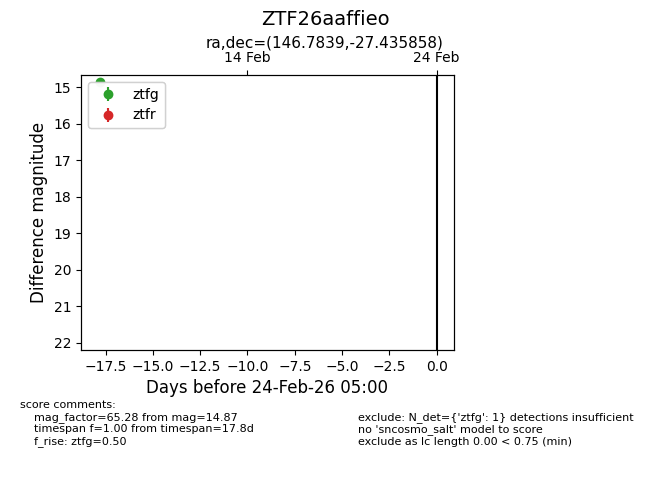
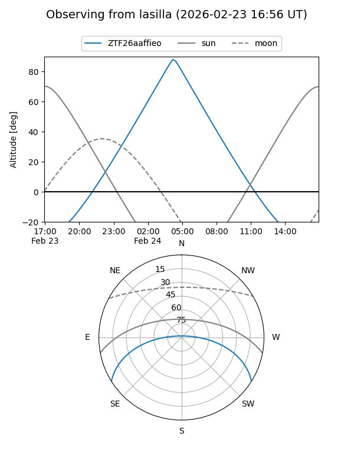
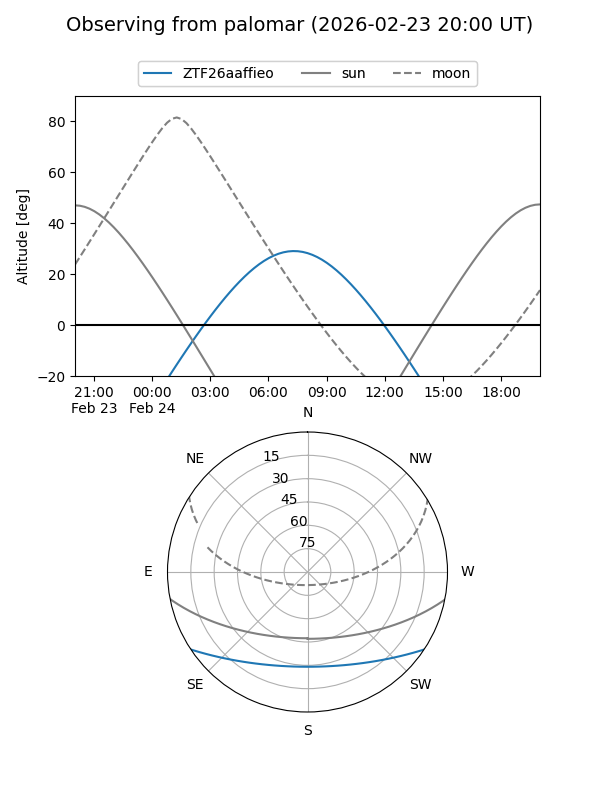

ZTF26aaffieo
Target ZTF26aaffieo at 2026-02-24 09:08
Aliases and brokers:
FINK: link
Lasair: link
ALeRCE: link
alt names
ZTF26aaffieo (ztf,fink_ztf)
Coordinates:
equatorial (ra, dec) = 146.7839,-27.43586
equatorial (HMS+DMS) = 09:47:08.14,-27:26:09.09
galactic (l, b) = (260.1521,+19.74631)
Flags:
Photometry:
last ztfg=14.87
1 ztfg detections
Lightcurve

Visibility


Additional plots